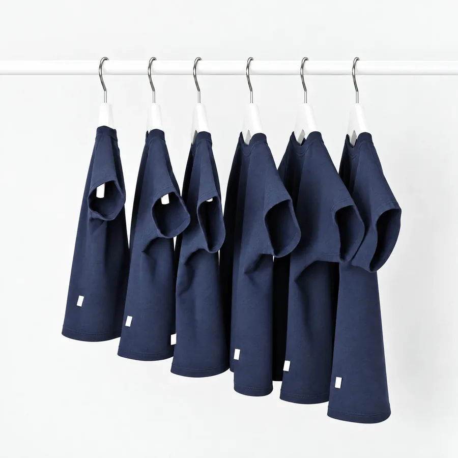

مقاساتنا حسب عمر البيبي، بس كل بيبي بيكبر على طريقته. لهيك اعتمدي على الطول والوزن أكثر من العمر. إذا مش متأكدة، اختاري المقاس الأكبر عشان البيبي يلبس القطعة فترة أطول.

⚠️ الأرقام تقريبية، وبتختلف شوي من قطعة لقطعة. القياسات الدقيقة لكل قطعة مكتوبة بصفحتها.
كيف تقيسي البيبي؟
مدّدي البيبي على ظهره، وقيسي من أعلى راسه لكعب رجله وهو ممدود.
استعملي آخر وزن من زيارة الطبيب أو المركز الصحي.
خدي المقاس الأكبر، لأنه البيبي بيكبر بسرعة بأول سنة.
القطن ممكن يصغر شوي بأول غسلة. اغسليه على 30 درجة.
لسا مش متأكدة من المقاس؟ ابعتيلنا عمر البيبي وطوله ووزنه، ومنساعدك نختار.
اسألينا على واتسابNUNU KIDS
نونو كيدز متجر ملابس مواليد، بنختار فيه كل قطعة بإيدنا: قطن ناعم، قصّات مريحة، وألوان هادية بتليق بأحلى بيبي. بدنا نسهّل على كل أم تجهيز بيبيها، من بكج المستشفى لأول عيد ميلاد.
- قطع مختارة بعناية لبشرة المولود الحساسة
- بكجات جاهزة ومغلفة كهدية
- الدفع عند الاستلام والتبديل سهل
مناطق وأسعار التوصيل
الدفع
الدفع نقداً عند الاستلام فقط. بتدفعي للمندوب لما يوصلك الطلب وتشوفيه بإيدك.
كيف بيمشي طلبك؟
- بتطلبي من الموقع، وبيوصلك رقم طلب.
- منتصل فيكِ خلال 24 ساعة لتأكيد الطلب والعنوان.
- منجهّز الطلب ومنغلفه، ومنسلمه للمندوب.
- بيوصلك، بتفحصيه، وبتدفعي.
إذا المقاس ما زبط، بتقدري تبدّلي القطعة بمقاس ثاني خلال من استلام الطلب، بشرط:
- القطعة بحالتها الأصلية، ما انلبست وما انغسلت
- التيكيت لسا عليها، ومع التغليف الأصلي
- الملابس الداخلية والبدي ما بتنبدل إذا انفتح تغليفها (لأسباب صحية)
كيف أبدّل؟
ابعتيلنا رقم الطلب على واتساب، ومنرتب معك موعد استلام القطعة وتوصيل المقاس الجديد.
تواصلي معنا
بنرد على رسائلك من السبت للخميس، من 10 الصبح لـ 8 المسا.